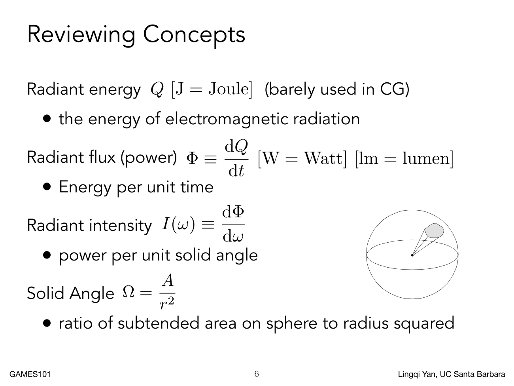
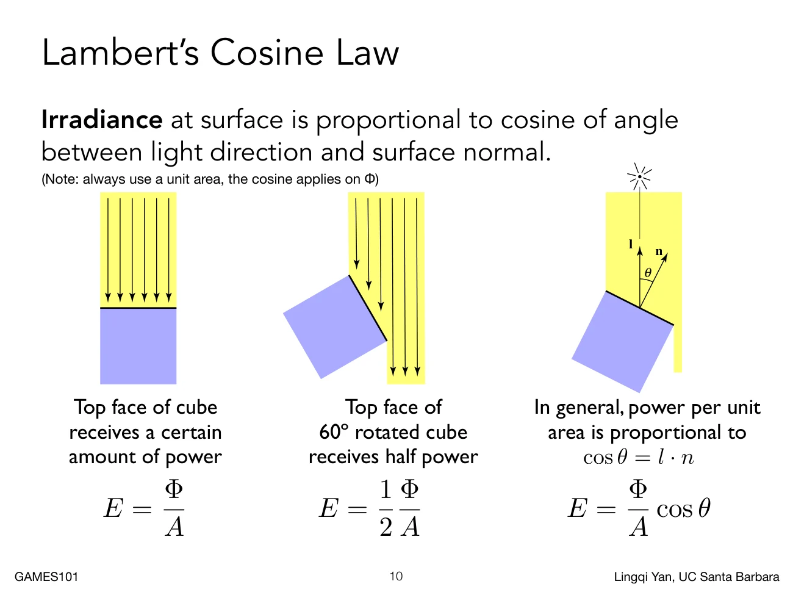
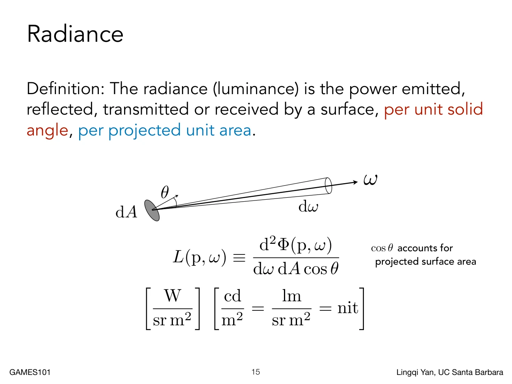
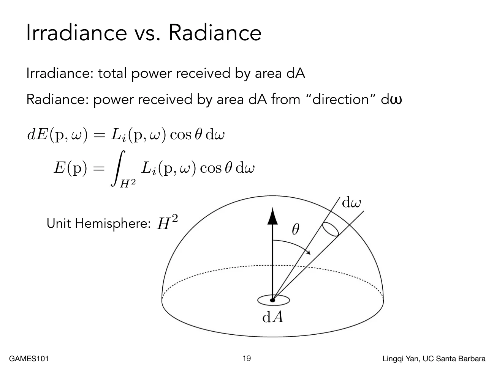
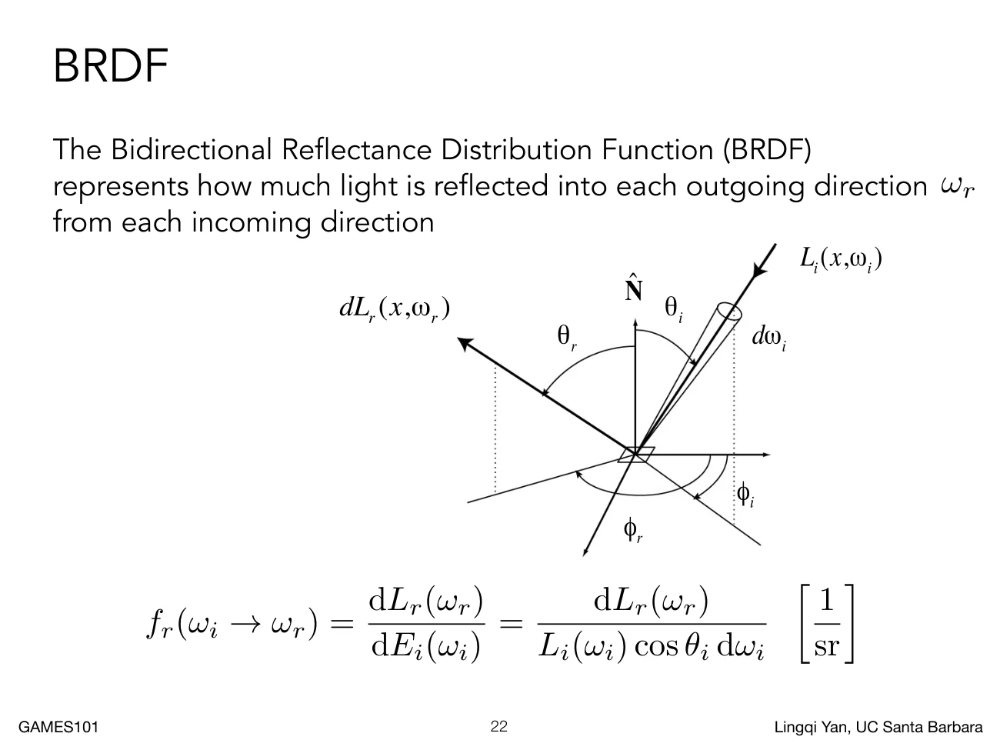
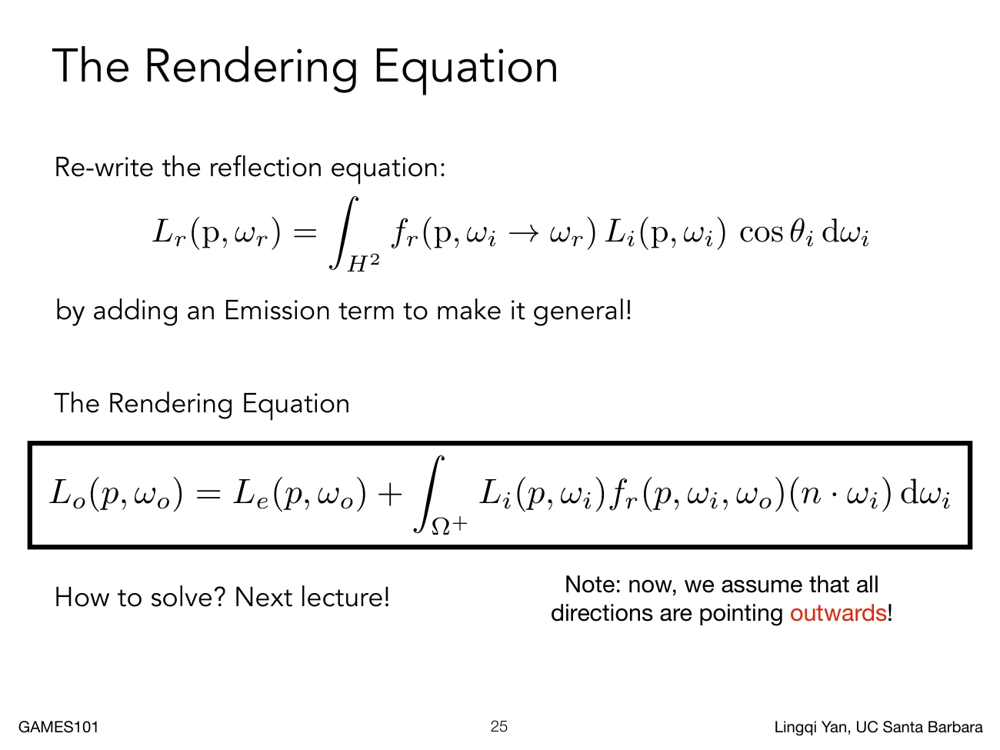
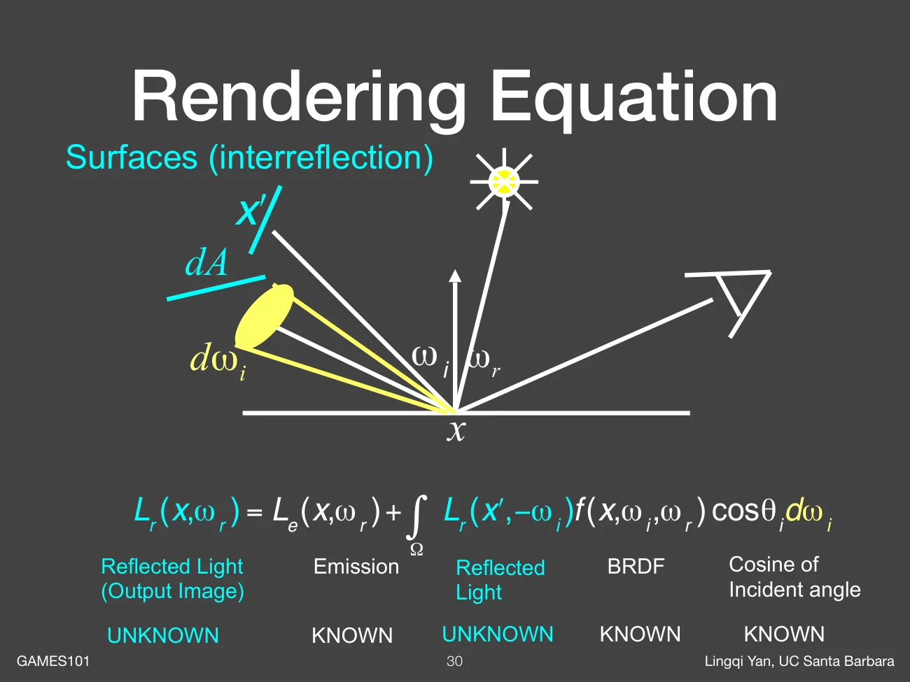
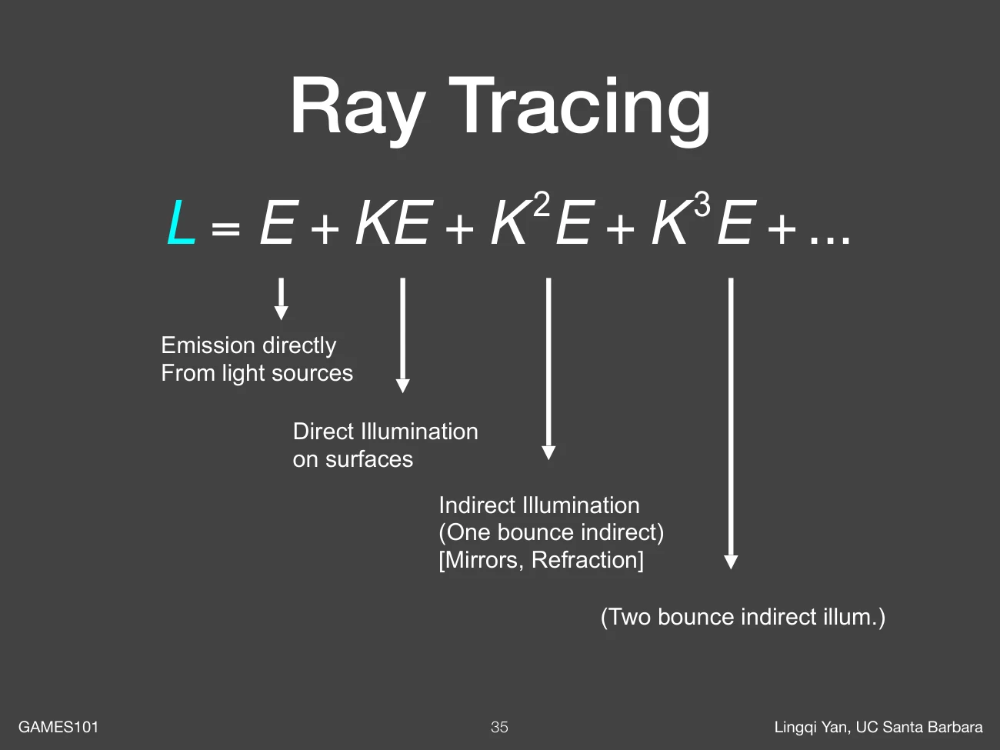
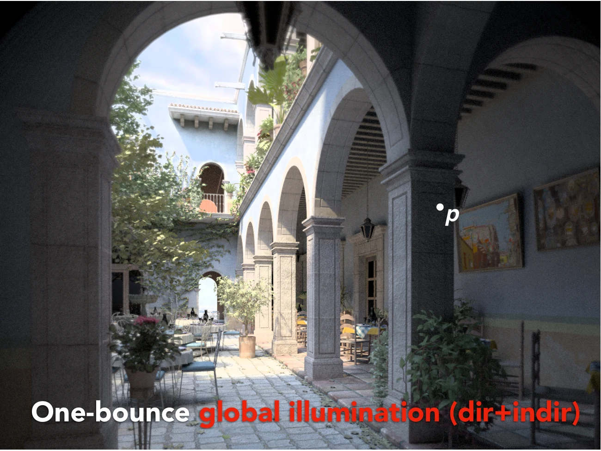
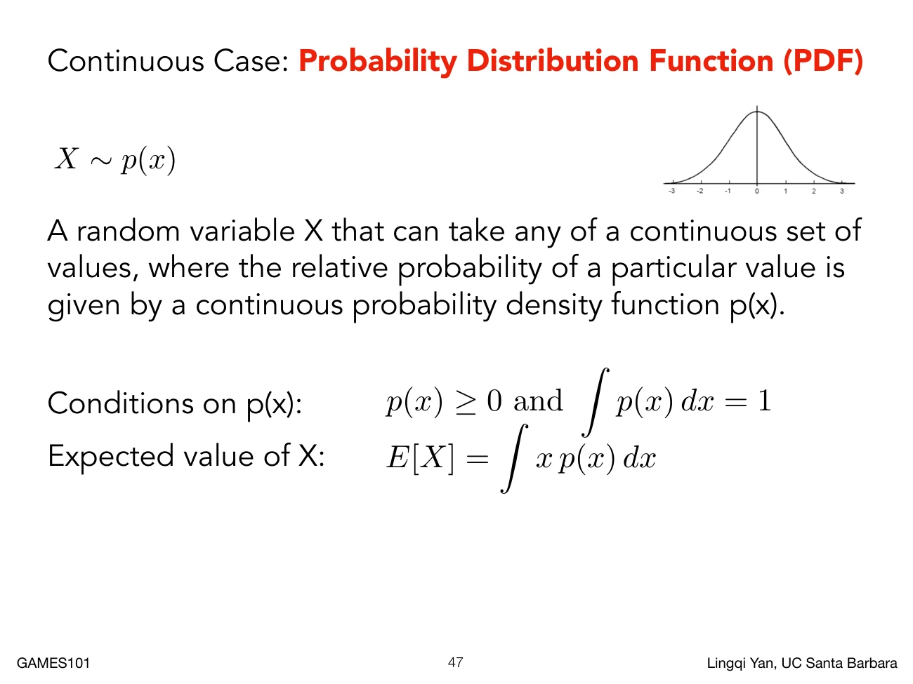

第 15 讲：光线追踪（光传输与全局光照）——从辐射度量到渲染方程
用辐射度量学把「光」量化，推导出渲染方程，并说明光线追踪为什么能求解全局光照。
◆ 学完这一讲，你应该能
能说清辐射能量、辐射通量、辐射强度、辐照度、辐射亮度的定义与量纲关系
能写出渲染方程，并解释其中每一项（自发光、BRDF、入射光、余弦项、积分域）的物理含义
理解渲染方程是第二类 Fredholm 积分方程，能把它离散成矩阵形式 L = E + KL
能通过诺伊曼级数展开解释直接光照、一次弹射、多次弹射全局光照分别对应展开式的哪几项
掌握随机变量、PDF、期望值的定义，为下一讲蒙特卡洛积分做铺垫
核心结论速记
辐射亮度（radiance）是描述光线的基本量，渲染就是在求每个方向上的 radiance。
辐照度（irradiance）是单位面积接收的功率，radiance 对半球积分再乘余弦就是 irradiance。
BRDF 描述「从某个入射方向来的光，有多少被反射到某个出射方向」，单位是 1/sr。
反射方程把出射 radiance 写成对入射 radiance 的半球积分，但入射 radiance 又依赖其他点的出射 radiance，所以是递归的。
加上自发光项就得到渲染方程：L_o = L_e + ∫ L_i f_r (n·ω_i) dω_i，它是第二类 Fredholm 积分方程。
把渲染方程写成算子形式 L = E + KL，展开成 L = E + KE + K²E + …，每一项对应光线弹射次数。
直接光照 = E + KE（光栅化着色大致到此为止），全局光照需要 K²E 及更高阶项。
概率论是下一讲蒙特卡洛积分的基础：PDF 描述随机变量取值的相对概率，期望值是对 PDF 加权平均。
011. 把光量化：辐射度量学的基本量
上一讲我们学了光线求交和 BVH 加速，但「光线追踪到底在追什么」还没回答。这一讲先用辐射度量学（radiometry）把「光」变成可以计算的物理量。
课件从最底层的量开始：
- 辐射能量（radiant energy） \(Q\)，单位焦耳（J）。这是电磁辐射的总能量，在图形学里几乎不直接用。
- 辐射通量（radiant flux / power） \(\Phi = dQ/dt\)，单位瓦特（W），也可以用人眼感知的流明（lm）。它表示单位时间通过的能量。
- 辐射强度（radiant intensity） \(I(\omega) = d\Phi/d\omega\)，单位 W/sr。它表示单位立体角内的功率，描述「点光源往某个方向发多亮」。
- 立体角（solid angle） \(\Omega\)：球面上被截的面积除以半径平方，无量纲，单位球面度（sr）。微分形式是 \(d\omega = \sin\theta\,d\theta\,d\varphi\)。
注意立体角的微分式里有个 \(\sin\theta\)，这是球坐标的面积元带来的，后面做半球积分时会反复用到。
这几个量的关系可以这样记：能量对时间求导得通量，通量对立体角求导得强度，通量对面积求导得辐照度，而 radiance 是同时对立体角和投影面积求导。量纲一定要记牢，因为后面 BRDF 的单位就是从量纲推出来的。

补充说明
量纲分析是检查公式的好工具：BRDF 的单位 sr⁻¹ 就是从「出射 radiance 除以入射 irradiance」推出来的。
常见坑
把 radiant intensity 和 irradiance 搞混 → 一个是对立体角、一个是对面积 → 看单位：W/sr 是强度，W/m² 是辐照度。
立体角微分写成 \(d\theta d\varphi\) 漏掉 \(\sin\theta\) → 半球积分结果会错 → 记住 \(d\omega = \sin\theta\,d\theta\,d\varphi\)。
UE / Unity 落地
UE 的 Light 单位有 Lumen（总光通量）和 Candela（发光强度），Unity 的 Light 也有 Intensity 与 Lumen 选项，正好对应这里的 flux 与 intensity。
UE 的 Sky Light 强度用 cd/m²（尼特），这就是 radiance 的单位，说明环境光本质上是按 radiance 描述的。
022. 辐照度与 Lambert 余弦定律：为什么冬天冷、夏天热
辐照度（irradiance） 定义为单位面积上入射的功率： \[ E(x) = \frac{d\Phi(x)}{dA} \] 单位是 W/m²，或者 lux（lm/m²）。它描述「一个表面点接收了多少光」。
关键点是 Lambert 余弦定律（Lambert's cosine law）：当光斜着照到表面时，同样一束光摊到了更大的面积上，所以单位面积接收的功率变小。公式是： \[ E = \frac{\Phi}{A}\cos\theta = \frac{\Phi}{A}(\mathbf{l}\cdot\mathbf{n}) \] 其中 \(\mathbf{l}\) 是指向光源的单位向量，\(\mathbf{n}\) 是表面单位法线。课件用立方体举例：顶面正对光时接收全部功率，旋转 60° 后只接收一半功率。
课件还解释了四季的成因：地球自转轴与公转平面有约 23.5° 的倾角，北半球冬天时太阳光斜射，同样的光通量摊到更大的地面面积上，单位面积接收的功率（辐照度）就小，所以冷。这是同一个余弦定律的宏观版本。
另一个容易错的地方是 辐照度随距离的衰减。课件特别做了「Correction」：如果点光源向所有方向均匀发光，总功率是 \(\Phi\)，那么在半径 \(r\) 的球面上，辐照度是 \(E = \Phi/(4\pi r^2)\)，与 \(r^2\) 成反比。注意这里分母是 \(4\pi r^2\) 而不是 \(\pi r^2\)，因为球面总面积是 \(4\pi r^2\)。课件用两个球对比说明：半径翻倍，辐照度变成四分之一。

补充说明
课件特意纠正了「辐照度衰减」的公式，说明很多人会把球面积写成 \(\pi r^2\)（那是圆面积），球面是 \(4\pi r^2\)。
常见坑
点光源衰减写成 \(1/r^2\) 却忘了总功率要除以 \(4\pi\) → 亮度整体偏大或偏小 → 记住均匀点光源 \(E = \Phi/(4\pi r^2)\)。
法线没归一化就点乘 → 余弦项大于 1 或为负 → 着色前先 normalize 法线，并 clamp 到 0。
把「功率减半」理解成「亮度减半」→ 其实辐照度是单位面积功率，面积变大才是关键 → 回到定义 \(E = d\Phi/dA\)。
UE / Unity 落地
UE 的 Point Light 默认启用 Inverse Squared Falloff，就是这里的 \(1/r^2\)；Unity 的 Light 也有 Range 与 Intensity 配合衰减。
材质里的 N·L 点乘就是 Lambert 余弦项，UE 的 Default Lit 和 Unity 的 Standard Shader 都在用。
033. 辐射亮度：渲染真正要求的东西
辐射亮度（radiance） 是描述环境中光分布的基本场量。课件原话：radiance 是和光线（ray）关联的量，渲染就是在计算 radiance。
定义是：单位立体角、单位投影面积上的功率： \[ L(p,\omega) = \frac{d\Phi(p,\omega)}{d\omega\, dA\cos\theta} \] 单位是 W/(sr·m²)，也叫尼特（nit）。注意分母里的 \(\cos\theta\)：因为面积要投影到垂直于光线方向的平面上，斜着的面积看起来更小，所以除以余弦。
课件给了三个量的关系，非常值得背下来：
- 辐照度（irradiance）：单位面积上的功率。
- 辐射强度（intensity）：单位立体角上的功率。
- 辐射亮度（radiance）：单位立体角、单位投影面积上的功率。
所以 radiance 既可以看成「irradiance 对立体角求导」，也可以看成「intensity 对投影面积求导」。这两个视角在后面的积分里都会用到。
课件还区分了 入射辐射亮度（incident radiance） 和 出射辐射亮度（exiting radiance）：
- 入射 radiance：沿某个方向到达表面点的 radiance，等于「该方向的 irradiance 对立体角求导」，即 \(L(p,\omega) = dE(p)/d\omega\cos\theta\)。
- 出射 radiance：从表面沿某个方向离开的 radiance，等于「该方向的 intensity 对投影面积求导」，即 \(L(p,\omega) = dI(p,\omega)/dA\cos\theta\)。
为什么 radiance 这么重要？因为它沿光线传播时（在真空里）保持不变，而且相机的每个像素本质上就是在接收某个方向上的 radiance。所以「渲染 = 对每个像素方向求 radiance」。

补充说明
radiance 沿光线不变这个性质是后续「路径追踪为什么可以只追一条路径」的理论基础。
常见坑
radiance 定义里漏掉 \(\cos\theta\) → 斜看面积光时亮度不对 → 记住「投影面积」四个字。
把 radiance 和 irradiance 混用 → 积分时量纲对不上 → radiance 单位是 W/(sr·m²)，irradiance 是 W/m²。
以为 radiance 会随距离衰减 → 在无吸收介质中 radiance 沿光线不变，衰减的是 irradiance → 区分「场量」和「面积接收量」。
UE / Unity 落地
UE 的 Sky Atmosphere 和 Sky Light 用 cd/m² 描述环境 radiance，Post Process 里的曝光也是按 radiance 来调的。
Unity 的 HDR 渲染管线里，光照缓冲存的本质就是 radiance，最后才做 tonemapping。
044. 辐照度与辐射亮度的关系：半球积分
这一节把 irradiance 和 radiance 用积分连起来，是后面反射方程的直接铺垫。
对一个表面点 \(p\)，来自各个方向的入射 radiance 累加起来，就是它接收的总辐照度： \[ E(p) = \int_{H} L_i(p,\omega)\cos\theta\, d\omega \] 积分域 \(H\) 是法线所在的那个半球（上半球），因为只有从正面来的光才能照到表面。\(\cos\theta\) 就是 Lambert 余弦项。
微分形式是： \[ dE(p,\omega) = L_i(p,\omega)\cos\theta\, d\omega \]
这个式子说明：irradiance 是 radiance 在半球上的加权积分，权重是余弦。反过来，radiance 是 irradiance 对立体角的「密度」。
课件用一张图对比了 irradiance 和 radiance：irradiance 是「面积 dA 接收的总功率」，radiance 是「面积 dA 从某个方向 dω 接收的功率」。一个是积分后的总量，一个是方向上的分布。
理解这个积分对写 shader 很关键：环境光（IBL）本质上就是对这个半球积分做数值近似，UE 的 Reflection Capture 和 Unity 的 Reflection Probe 都是在预计算这个积分。

补充说明
这个积分也是「为什么环境光遮蔽（AO）能近似全局光照」的原因：AO 本质上是在估计半球积分里被遮挡的比例。
常见坑
积分域写成整个球面 → 把背面来的光也算进去 → 只对上半球积分，或用 \(\max(0, n\cdot\omega)\) 截断。
忘记 \(\cos\theta\) 权重 → 环境光在掠射角处过亮 → 积分里必须带余弦项。
把 \(d\omega\) 直接当成 \(d\theta\) → 积分结果差一个 \(\sin\theta\) → 球坐标下 \(d\omega = \sin\theta\,d\theta\,d\varphi\)。
UE / Unity 落地
UE 的 Skylight 用 cubemap 做 irradiance 积分，Unity 的 ambient probe 也是类似思路。
材质里 Indirect Lighting 的 diffuse 项就是对这个半球积分做近似（球谐或 cubemap 卷积）。
055. BRDF：一个表面点如何分配反射光
现在我们知道表面接收了多少光（irradiance），问题是：这些光反射到各个方向分别是多少？这就是 双向反射分布函数（BRDF, Bidirectional Reflectance Distribution Function） 要回答的。
课件先描述物理过程：从方向 \(\omega_i\) 来的 radiance 打到面积 \(dA\) 上，变成微分辐照度 \(dE(\omega_i) = L(\omega_i)\cos\theta_i\, d\omega_i\)；然后这部分能量被反射到方向 \(\omega_r\)，产生微分 radiance \(dL_r(\omega_r)\)。
BRDF 定义为「出射 radiance 除以入射 irradiance」： \[ f_r(\omega_i \to \omega_r) = \frac{dL_r(\omega_r)}{dE_i(\omega_i)} = \frac{dL_r(\omega_r)}{L_i(\omega_i)\cos\theta_i\, d\omega_i} \] 单位是 sr⁻¹（因为 radiance 除以 irradiance 再除以立体角）。
BRDF 有两个重要性质（课件虽未展开，但工程上必须知道）：
- 非负性：\(f_r \ge 0\)。
- 能量守恒：对出射方向积分再乘余弦，不能超过 1，否则材质会「发光」。
课件没有具体展开某种 BRDF 的公式，但你要知道：Lambert 漫反射的 BRDF 是常数 \(\rho/\pi\)，镜面反射的 BRDF 是 delta 函数。UE 的 Default Lit 和 Unity 的 Standard 都是基于微表面 BRDF（GGX）的。

补充说明
课件没有给具体 BRDF 公式，这是有意的：这一讲的重点是「BRDF 在渲染方程里扮演什么角色」，具体模型留到材质课。
常见坑
BRDF 定义里分母漏掉 \(\cos\theta_i\) → 量纲变成 sr⁻¹ 但数值错 → 分母是 \(L_i\cos\theta_i d\omega_i\)。
把 BRDF 当成「反射率」→ 反射率是无量纲的，BRDF 单位是 sr⁻¹ → 漫反射 BRDF 要除以 π 才是反射率。
BRDF 不满足能量守恒 → 材质越叠越亮 → 检查积分是否超过 1。
UE / Unity 落地
UE 的 Material 里 Base Color / Metallic / Roughness 最终都映射到微表面 BRDF 参数，Specular 项就是 GGX 的 BRDF。
Unity 的 Standard Shader 同样是 GGX + Lambert，Smoothness 控制高光锐度。
066. 反射方程与渲染方程：把光传输写成积分方程
把 BRDF 代回积分，就得到 反射方程（reflection equation）： \[ L_r(p,\omega_r) = \int_{H} f_r(p,\omega_i \to \omega_r)\, L_i(p,\omega_i)\cos\theta_i\, d\omega_i \] 意思是：出射 radiance 等于所有入射方向贡献的积分，每个方向的贡献是「入射 radiance × BRDF × 余弦」。
但这里有个大问题：入射 radiance \(L_i\) 本身又来自场景中其他点的出射 radiance。也就是说，反射方程是递归的： \[ L_r(p,\omega_r) = \int_{H} f_r(p,\omega_i \to \omega_r)\, L_r(p', -\omega_i)\cos\theta_i\, d\omega_i \] 其中 \(p'\) 是沿 \(\omega_i\) 方向打到的另一个点。
课件把这个递归写成 渲染方程（rendering equation），并加上自发光项： \[ L_o(p,\omega_o) = L_e(p,\omega_o) + \int_{\Omega^+} L_i(p,\omega_i)\, f_r(p,\omega_i,\omega_o)\,(n\cdot\omega_i)\, d\omega_i \] 注意这里积分域写成 \(\Omega^+\)，并且约定所有方向都朝外。
课件用一张图逐项标注：
- \(L_e\)：自发光（emission），已知。
- \(L_i\)：入射光，未知（因为它依赖其他点的出射）。
- \(f_r\)：BRDF，已知（材质决定）。
- \((n\cdot\omega_i)\)：余弦项，已知。
- \(L_o\)：出射光，也就是我们要输出的图像，未知。
所以渲染方程是一个「未知函数出现在积分号内外」的方程，不能直接算，必须用数值方法求解。


补充说明
渲染方程是图形学的「牛顿方程」，后面所有全局光照算法（路径追踪、光子映射、辐射度）都是在解它。
常见坑
把 \(L_i\) 当成已知量 → 只能算直接光照，漏掉间接光 → 记住 \(L_i\) 本身是未知的。
积分域写成整个球面 → 把背面光也算进来 → 用 \(\Omega^+\) 上半球，或 \((n\cdot\omega_i)\) 截断。
方向约定不统一 → 递归式里正负号搞错 → 课件约定所有方向朝外，入射方向取负。
UE / Unity 落地
UE 的 Lumen 和 Unity 的 Ray Tracing / SSGI 本质上都在数值求解这个方程，只是用屏幕空间或硬件光追做近似。
光栅化管线（UE 的 Deferred、Unity 的 Forward）只算直接光照 + 预计算的间接光，相当于只取展开式前几项。
077. 算子形式与诺伊曼级数：直接光、间接光、全局光照
课件把渲染方程写成算子形式： \[ L = E + KL \] 其中 \(L\) 是出射 radiance 的向量/函数，\(E\) 是自发光，\(K\) 是 光传输算子（light transport operator），它把「入射 radiance」映射成「经过 BRDF 和余弦加权后的反射 radiance」。
移项得： \[ (I - K)L = E \] \[ L = (I - K)^{-1} E \] 然后用二项式展开（诺伊曼级数）： \[ L = (I + K + K^2 + K^3 + \dots)E = E + KE + K^2E + K^3E + \dots \]
这个展开式的每一项都有清晰的物理意义：
- \(E\)：光源直接发出的光。
- \(KE\)：光源发出的光打到表面一次后进入眼睛，即 直接光照（direct illumination）。
- \(K^2E\)：光在场景里弹了一次（一次间接），即 一次弹射全局光照。
- \(K^3E\)：弹两次，即 两次弹射全局光照。
- 更高阶项：多次弹射，包括镜面反射、折射等。
课件用一系列图展示了弹射次数增加的效果：直接光照只有硬阴影；一次弹射后阴影变软、颜色渗透（color bleeding）；弹射次数越多，画面越接近真实。通常 4~8 次弹射就足够收敛，16 次几乎看不出差别。
这也解释了为什么光栅化只能做「直接光照」：它只算 \(E + KE\)，没有能力算 \(K^2E\) 及更高阶项。全局光照算法（路径追踪）就是在估计整个级数和。


补充说明
这个级数展开也是「路径追踪为什么按弹射次数截断」的理论依据：截断误差随弹射次数指数衰减（在能量守恒材质下）。
常见坑
以为弹射次数越多越好 → 收敛后收益递减，噪声反而可能增加 → 一般 4~8 次足够，配合降噪。
把 \(K\) 当成矩阵直接求逆 → 场景太大矩阵不可解 → 实际用蒙特卡洛采样估计级数和。
混淆「一次弹射」和「一次间接」→ 一次弹射指光从光源出发弹了一次到眼睛，对应 \(K^2E\) → 数 K 的幂次。
UE / Unity 落地
UE 的 Lumen 用屏幕空间 + 距离场做多次弹射近似，Post Process 里可以调 Lumen GI 的 bounce 次数。
Unity 的 Progressive Lightmapper 烘焙的是多次弹射的辐照度，实时 GI 则用 SSGI 或 Ray Tracing 近似。
088. 概率论复习：为蒙特卡洛积分做准备
渲染方程是个积分，实际求解要用蒙特卡洛方法，所以课件最后复习了概率论。
随机变量（random variable） \(X\)：表示一个随机过程的取值。离散情况下，每个取值 \(x_i\) 有概率 \(p_i\)，要求 \(p_i \ge 0\) 且 \(\sum p_i = 1\)。例如六面骰子，每面概率 1/6。
概率密度函数（PDF, probability density function）：连续情况下，\(X \sim p(x)\)，要求 \(p(x) \ge 0\) 且 \(\int p(x)\,dx = 1\)。注意 PDF 的值可以大于 1，只要积分等于 1 就行。
期望值（expected value）：反复采样得到的平均值。
- 离散：\(E[X] = \sum_i x_i p_i\)。骰子期望是 \((1+2+3+4+5+6)/6 = 3.5\)。
- 连续：\(E[X] = \int x\, p(x)\,dx\)。
随机变量的函数：\(Y = f(X)\) 也是随机变量，其期望是： \[ E[Y] = E[f(X)] = \int f(x)\, p(x)\, dx \]
这个公式是蒙特卡洛积分的关键：如果我们想算积分 \(\int f(x)\,dx\)，可以把它写成 \(\int f(x)/p(x) \cdot p(x)\,dx\)，也就是 \(E[f(X)/p(X)]\)，然后用采样平均来估计。下一讲会详细讲。

补充说明
这一节是下一讲「蒙特卡洛路径追踪」的数学准备，务必把期望值的定义记牢。
常见坑
以为 PDF 的值必须小于等于 1 → 连续 PDF 可以大于 1 → 只有积分等于 1 才是约束。
离散概率求和不为 1 → 期望值算错 → 检查 \(\sum p_i = 1\)。
把期望值当成「最可能的值」→ 期望是平均，不是众数 → 骰子期望 3.5 但不会掷出 3.5。
UE / Unity 落地
UE 的 Path Tracer 和 Unity 的 Progressive Lightmapper 都用蒙特卡洛采样，采样数（Samples）就是这里的样本数量。
材质里的 Roughness 影响采样分布，粗糙度越大采样越分散，噪声越大。
引擎对照表
| 概念 / 效果 | Unreal Engine | Unity |
|---|---|---|
辐射通量 / 发光强度 | Light 的 Intensity 单位 Lumen / Candela | Light 的 Intensity 单位 Lumen / Candela |
辐射亮度（radiance） | Sky Light 的 cd/m²、Post Process 曝光 | HDR 渲染管线中的光照缓冲 |
Lambert 余弦项 | Default Lit 材质里的 N·L | Standard Shader 里的 N·L |
BRDF | Material 的 Base Color / Metallic / Roughness 映射到 GGX | Standard Shader 的 GGX + Lambert |
渲染方程求解 | Lumen（屏幕空间 + 距离场多次弹射） | Progressive Lightmapper / Ray Tracing / SSGI |
蒙特卡洛采样 | Path Tracer 的 Samples Per Pixel | Lightmapper 的 Samples |
术语双语表
| English | 中文 | 说明 |
|---|---|---|
| Radiant flux | 辐射通量 | 单位时间通过的能量，单位 W 或 lm。 |
| Radiant intensity | 辐射强度 | 单位立体角内的功率，单位 W/sr。 |
| Irradiance | 辐照度 | 单位面积接收的功率，单位 W/m² 或 lux。 |
| Radiance | 辐射亮度 | 单位立体角、单位投影面积的功率，单位 W/(sr·m²) 或 nit。 |
| Solid angle | 立体角 | 球面面积除以半径平方，单位 sr，微分式含 sinθ。 |
| BRDF | 双向反射分布函数 | 出射 radiance 与入射 irradiance 之比，单位 sr⁻¹。 |
| Rendering equation | 渲染方程 | 描述光传输的积分方程，Kajiya 1986 年提出。 |
| Fredholm integral equation | Fredholm 积分方程 | 未知函数出现在积分号内外的积分方程，渲染方程是第二类。 |
| Neumann series | 诺伊曼级数 | L = E + KE + K²E + … 的展开，对应光线弹射次数。 |
| 概率密度函数 | 描述连续随机变量取值的相对概率，积分必须为 1。 |
课后练习
01 一个点光源总功率为 Φ = 100 W，向所有方向均匀发光。求距离 2 m 处的辐照度 E。
查看答案
提示：
均匀点光源的辐照度是 Φ/(4πr²)。
E = Φ/(4πr²) = 100/(4π×4) = 100/(16π) ≈ 1.99 W/m²。注意分母是 4πr² 而不是 πr²。
02 写出渲染方程的完整形式，并说明每一项的物理含义。
查看答案
提示：
参考课件 P24。
L_o(p,ω_o) = L_e(p,ω_o) + ∫_{Ω⁺} L_i(p,ω_i) f_r(p,ω_i,ω_o) (n·ω_i) dω_i。L_o 是出射 radiance（输出图像），L_e 是自发光，L_i 是入射 radiance（未知），f_r 是 BRDF，n·ω_i 是余弦项，积分域是上半球 Ω⁺。
03 把渲染方程写成算子形式 L = E + KL，展开成诺伊曼级数，并指出直接光照和一次弹射全局光照分别对应哪几项。
查看答案
提示：
展开 L = (I - K)⁻¹E。
L = E + KE + K²E + K³E + …。直接光照对应 E + KE（光源 + 一次反射到眼睛），一次弹射全局光照对应 K²E（光在场景中弹一次后到眼睛）。
04 为什么光栅化管线只能做直接光照，而做不了全局光照？用渲染方程的展开式解释。
查看答案
提示：
光栅化能算几项？
光栅化管线在着色时只考虑光源直接照射到表面的贡献，相当于只计算了展开式的前两项 E + KE，没有能力计算 K²E 及更高阶项（间接光）。全局光照需要估计整个级数和，必须用蒙特卡洛采样或预计算烘焙。
05 一个六面骰子，求掷出点数的期望值。如果骰子被做了手脚，1 点概率为 0.5，其余各面概率相等，期望值变成多少？
查看答案
提示：
期望值 = Σ x_i p_i。
公平骰子：E = (1+2+3+4+5+6)/6 = 3.5。作弊骰子：1 点概率 0.5，其余 5 面各 0.1，E = 1×0.5 + (2+3+4+5+6)×0.1 = 0.5 + 2.0 = 2.5。